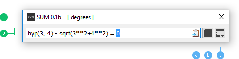
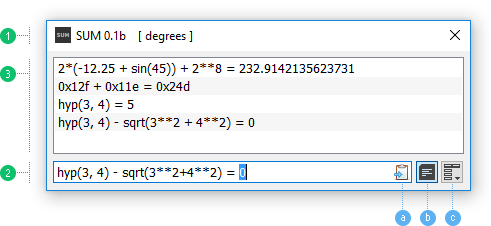

The main interface of SUM has two modes - Simple (default) and History. To switch between them use History button (the images below - b) or Ctrl-H shortcut key. There are also Ctrl-Up and Ctrl-Down additional shortcut keys, to open and close History, respectively. The main window can be freely resized. After History is open, it can be resized vertically as well.
The Calculation Field has an icon showing Autocopy state (the images below - a). Autocopy is On if the icon is active. The state can be changed by Menu (the images below - c) or Ctrl-Shift-C shortcut key (see Shortcut keys). It's useful to turn Off Autocopy, if something important is already is copied in clipboard.
The indicator at the right of the title on Title bar surrounding by square brackets shows the current angular unit for trigonometric function. Two possible units are available - degrees (by default) and radians.
SUM has no option to minimize or close main window (program Exit is available by main Menu or a shortcut key). If Close button is pressed, SUM is minimized to System Tray. The tray icon is always available to bring it back, but it's actually more preferable to use Global Shortcut Key (see Preferences). In case of autostart with System, there is an option to Start minimized in Preferences.
To Reset the main window position and size as well as all Preferences, use corresponding option (note that History will stay unchanged).

Simple Mode - History is closed but reachable.

History Mode - History is open.
1. Title bar - with angular unit indicator, 2. Calculation Field - the state after calculation is done, 3. History - has no selection.
a) Autocopy icon - shows autocopy state (On), b) History button - pressed if History is open, c) Menu button.
The Calculation Filed has permanent focus for input, if the main window is active, so all keyboard key combinations will affect also the Calculation Field. This field has two implicit states - Edit and Free. These states are defined generally by user input.
Once user typed/deleted a character or edited text in Calculation Field, the state turns to Edit, and moving through History becomes unavailable. If the calculation is done or the input field is empty, the state becomes Free, and History is available by Up key.
Standard context menu as well as standard text field operations (i.e Enter, Backspace, Delete, Undo, etc.) are available for Calculation filed by default. In addition, there are some custom shortcut keys:
Up - up (back) in history list (move to History if state is Free),
Down - down (forth) in history list,
Ctrl-C - copy expression of current item from History if selected (copy text if Calculation Field has a selection),
Ctrl-R - copy result of current item from History if selected,
Ctrl-S - manually save History (it is always automatically saving on Exit),
Del - remove current item from History if selected (generally does standard text delete operation),
etc.
See Shortcut keys topic for all shortcut keys.